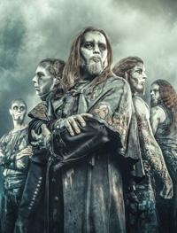
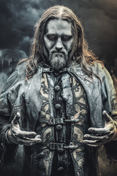
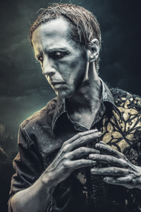
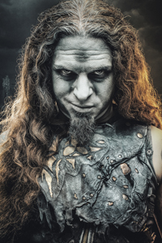
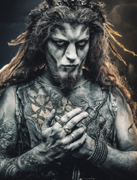
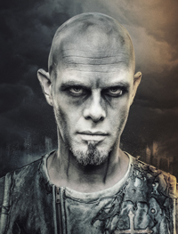

Skupina

Powerwolf je německo-rumunská power metalová kapela, která je aktivní od roku 2003, kdy
ji
založili Matthew a Charles Greywolfovi. Skupina je známa pro svůj temný vzhled a témata a koncept svých
písní či celých alb - stylizace do vlkodlaků a mnoho odkazů na křesťanství a církev.
Členové skupiny
Attila Dorn

Vokály - Attila Dorn vlastním jménem Karsten Brill, je rumunský zpěvák a operní
pěvec.Studoval operní zpěv na Národní univerzitě múzických umění v Bukurešti. Je součástí
skupiny
Powerwolf od jejího založení v roce 2003 a vydal s ní doposud 7 studiových alb. Jeho oblícenou
písnočkou skupiny Powerwolf je Nightsight of Siberia.
Falk Maria Schlegel

Klávesy - Oblíbená písnička skupiny Powerwolf - Stoßgebet. V
mládí ovlivněn zejména kapelami Iron Maiden a Black Sabbath
Charles Greywolf

Baskytara, druhá kytara - Oblíbená písnička skupiny Powerwolf - Stoßgebet.
V mládí ovlivněn zejména kapelami Iron Maiden, Ramones, Running Wild a nejdůležitější ze
všech ENTOMBED
Matthew Greywolf

Vedoucí kytara(lead guitar) - Oblíbená písnička skupiny Powerwolf - Killers with
the
Cross. V mládí ovlivněn zejména kapelami Iron Maiden, Black Sabbath, Scorpions, MSG, Mercyful
fate
Roel Van Helden

Bicí - Oblíbená písnička skupiny Powerwolf - Killers with the Cross. V
mládí ovlivněn zejména kapelami Iron Maiden, Iced Earth, Cannibal Corpse, Boney M., Taake,
Danzig,
Judas Priest, Kiss, Thin Lizzy, ZZ-Top